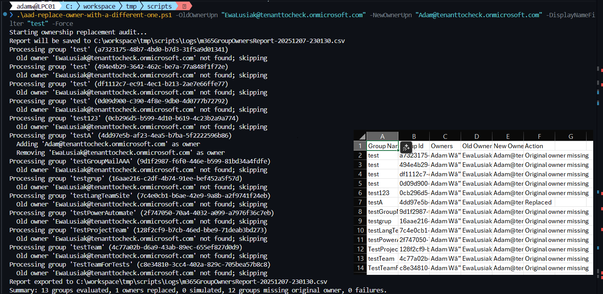

Replace an owner in a Microsoft 365 Group or Microsoft Team
Summary
Find all the Microsoft 365 Groups that a user is an Owner of and replace them with someone else useful for when an employee leaves and ownership needs to be updated.
Example usage of CLI for Microsoft 365 sample:

$AdminCenterURL = "https://contoso-admin.sharepoint.com/"
$oldOwnerUPN = Read-Host "Enter the old owner UPN to be replaced with" #testUser1@contose.onmicrosoft.com
$newOwnerUPN = Read-Host "Enter the new owner UPN to replace with" #testuser2@contoso.onmicrosoft.com
#Connect to SharePoint Online admin center
Connect-PnPOnline -Url $AdminCenterURL -Interactive
$dateTime = (Get-Date).toString("dd-MM-yyyy")
$invocation = (Get-Variable MyInvocation).Value
$directorypath = Split-Path $invocation.MyCommand.Path
$fileName = "m365GroupOwnersReport-" + $dateTime + ".csv"
$OutPutView = $directorypath + "\Logs\"+ $fileName
#Array to Hold Result - PSObjects
$m365GroupCollection = @()
#Retrieve any m 365 group starting with Permission
$m365Groups = Get-PnPMicrosoft365Group | where-object {$_.DisplayName -like "Permission*"}
$m365Groups | ForEach-Object {
$ExportVw = New-Object PSObject
$ExportVw | Add-Member -MemberType NoteProperty -name "Group Name" -value $_.DisplayName
$m365GroupOwnersName = "";
try
{
$oldOwner = Get-PnPMicrosoft365GroupOwners -Identity $_.GroupId | where-object {$_.Email -eq $oldOwnerUPN}
if($oldOwner)
{
#Replace old owner with new owner
Remove-PnPMicrosoft365GroupOwner -Identity $_.GroupId -Users $oldOwner.Email;
Add-PnPMicrosoft365GroupOwner -Identity $_.GroupId -Users $newOwnerUPN;
}
}
catch
{
write-host $("Error occured to update group " + $_.DisplayName + $Error)
}
#For auditing purposes - get owners of the group
$m365GroupOwnersName = (Get-PnPMicrosoft365GroupOwners -Identity $_.GroupId | select -ExpandProperty DisplayName) -join ";";
$ExportVw | Add-Member -MemberType NoteProperty -name " Group Owners" -value $m365GroupOwnersName
$m365GroupCollection += $ExportVw
}
#Export the result Array to CSV file
$m365GroupCollection | sort "Group Name" |Export-CSV $OutPutView -Force -NoTypeInformation
# Disconnect PnP online connection
Disconnect-PnPOnline
[CmdletBinding(SupportsShouldProcess = $true)]
param(
[Parameter(Mandatory, HelpMessage = "UPN of the current owner to replace.")]
[string]$OldOwnerUpn,
[Parameter(Mandatory, HelpMessage = "UPN of the new owner to add.")]
[string]$NewOwnerUpn,
[Parameter(HelpMessage = "Filter applied to group display names when querying Microsoft 365 groups.")]
[string]$DisplayNameFilter = "Permission",
[Parameter(HelpMessage = "Directory where the CSV report will be created.")]
[string]$OutputDirectory,
[Parameter(HelpMessage = "Prefix for the generated CSV report file name.")]
[string]$ReportNamePrefix = "m365GroupOwnersReport",
[switch]$Force
)
begin {
m365 login --ensure
if (-not $OutputDirectory) {
$OutputDirectory = if ($MyInvocation.MyCommand.Path) {
Join-Path -Path (Split-Path -Path $MyInvocation.MyCommand.Path) -ChildPath 'Logs'
} else {
Join-Path -Path (Get-Location).Path -ChildPath 'Logs'
}
}
if (-not (Test-Path -Path $OutputDirectory -PathType Container)) {
New-Item -ItemType Directory -Path $OutputDirectory -Force | Out-Null
}
$timestamp = Get-Date -Format 'yyyyMMdd-HHmmss'
$script:ReportPath = Join-Path -Path $OutputDirectory -ChildPath ("{0}-{1}.csv" -f $ReportNamePrefix, $timestamp)
$script:ReportItems = [System.Collections.Generic.List[psobject]]::new()
$script:Summary = [ordered]@{
GroupsEvaluated = 0
OwnersReplaced = 0
OwnersSimulated = 0
OwnersNotFound = 0
ReplacementFails = 0
}
Write-Host "Starting ownership replacement audit..."
Write-Host "Report will be saved to $ReportPath"
}
process {
$groupArgs = @('entra', 'm365group', 'list', '--output', 'json')
if ($DisplayNameFilter) {
$groupArgs += @('--displayName', $DisplayNameFilter)
}
$groupsOutput = & m365 @groupArgs 2>&1
if ($LASTEXITCODE -ne 0) {
throw "Failed to retrieve Microsoft 365 groups. CLI output: $groupsOutput"
}
$groups = if ([string]::IsNullOrWhiteSpace($groupsOutput)) { @() } else { $groupsOutput | ConvertFrom-Json }
if (-not $groups) {
Write-Host "No groups matched filter '$DisplayNameFilter'."
return
}
foreach ($group in $groups) {
$Summary.GroupsEvaluated++
Write-Host "Processing group '$($group.displayName)' ($($group.id))"
$action = 'Skipped'
$ownersForReport = @()
do {
$ownersOutput = & m365 entra m365group user list --groupId $group.id --role Owner --output json 2>&1
if ($LASTEXITCODE -ne 0) {
Write-Warning " Unable to retrieve owners for $($group.displayName). CLI: $ownersOutput"
$Summary.ReplacementFails++
$ownersForReport = 'Owners unavailable'
$action = 'Failed - Owners lookup'
break
}
$owners = if ([string]::IsNullOrWhiteSpace($ownersOutput)) { @() } else { $ownersOutput | ConvertFrom-Json }
$ownersForReport = $owners
$oldOwner = $owners | Where-Object { $_.userPrincipalName -eq $OldOwnerUpn }
if (-not $oldOwner) {
Write-Host " Old owner '$OldOwnerUpn' not found; skipping"
$Summary.OwnersNotFound++
$action = 'Original owner missing'
break
}
if ($PSCmdlet.ShouldProcess($group.displayName, "Replace owner '$OldOwnerUpn' with '$NewOwnerUpn'")) {
Write-Host " Adding '$NewOwnerUpn' as owner"
$addOutput = & m365 entra m365group user add --groupId $group.id --userNames $NewOwnerUpn --role Owner --output json 2>&1
if ($LASTEXITCODE -ne 0) {
Write-Warning " Failed to add '$NewOwnerUpn'. CLI: $addOutput"
$Summary.ReplacementFails++
$action = 'Failed - Add owner'
break
}
Write-Host " Removing '$OldOwnerUpn' as owner"
$removeArgs = @('entra', 'm365group', 'user', 'remove', '--groupId', $group.id, '--userNames', $OldOwnerUpn, '--output', 'json')
if ($Force) { $removeArgs += '--force' }
$removeOutput = & m365 @removeArgs 2>&1
if ($LASTEXITCODE -ne 0) {
Write-Warning " Failed to remove '$OldOwnerUpn'. CLI: $removeOutput"
$Summary.ReplacementFails++
$action = 'Failed - Remove owner'
break
}
$Summary.OwnersReplaced++
$action = 'Replaced'
$ownersAfterOutput = & m365 entra m365group user list --groupId $group.id --role Owner --output json 2>&1
if ($LASTEXITCODE -eq 0 -and -not [string]::IsNullOrWhiteSpace($ownersAfterOutput)) {
$ownersForReport = $ownersAfterOutput | ConvertFrom-Json
}
} else {
Write-Host " WhatIf: would add '$NewOwnerUpn' and remove '$OldOwnerUpn'"
$Summary.OwnersSimulated++
$action = 'Simulated'
}
} while ($false)
$ownerNames = if ($ownersForReport -is [string]) {
$ownersForReport
} elseif ($ownersForReport) {
($ownersForReport | Select-Object -ExpandProperty displayName -ErrorAction SilentlyContinue) -join ';'
} else {
''
}
$ReportItems.Add([pscustomobject]@{
'Group Name' = $group.displayName
'Group Id' = $group.id
'Owners' = $ownerNames
'Old Owner UPN' = $OldOwnerUpn
'New Owner UPN' = $NewOwnerUpn
'Action' = $action
})
}
}
end {
if ($ReportItems.Count -gt 0) {
$ReportItems | Sort-Object 'Group Name' | Export-Csv -Path $ReportPath -NoTypeInformation -Force
Write-Host "Report exported to $ReportPath"
} else {
Write-Host "No groups matched the criteria; nothing exported."
}
Write-Host ("Summary: {0} groups evaluated, {1} owners replaced, {2} simulated, {3} groups missing original owner, {4} failures." -f `
$Summary.GroupsEvaluated, $Summary.OwnersReplaced, $Summary.OwnersSimulated, $Summary.OwnersNotFound, $Summary.ReplacementFails)
}
Contributors
Disclaimer
THESE SAMPLES ARE PROVIDED AS IS WITHOUT WARRANTY OF ANY KIND, EITHER EXPRESS OR IMPLIED, INCLUDING ANY IMPLIED WARRANTIES OF FITNESS FOR A PARTICULAR PURPOSE, MERCHANTABILITY, OR NON-INFRINGEMENT.